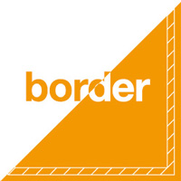
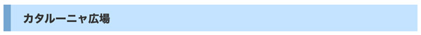

文字の囲み

CSSのborderについて解説して
- border は、要素の外枠線を指定するプロパティです。
CSSのborderとは？
- borderを使用して、要素に枠線をつける
- borderプロパティの値を指定する
セレクタ {
boder: 線の太さ, 線の種類, 線の色 ;
}
【例】
h3 { border: 2px solid #4087ea; }
👉️ 2pxの黒い実線の枠
基本構文
- 「border」と記述することで、上→右→下→左をショートハンドで記述したことになります
border: 1px solid red;
| 指定 | 意味 |
|---|---|
| 1px | 線の太さ |
| solid | 線の種類 |
| red | 線の色 |
線の種類（border-style）
| 値 | 表示 |
|---|---|
| solid | 実線 |
| dashed | 破線 |
| dotted | 点線 |
| double | 二重線 |
| groove | 立体的（凹） |
| ridge | 立体的（凸） |
| none | なし |
border: 3px dashed blue;
上下左右の枠線を個別に指定する
- 「border」と記述することにより、上→右→下→左をショートハンドで記述したことになります
| プロパティー | 意味 |
|---|---|
| border-top | 要素の上の線 |
| border-right | 要素の右の線 |
| border-bottom | 要素の下の線 |
| border-left | 要素の左の線 |
h3 { border-top: 2px solid #ea3b3b; border-right: 4px dotted #0073ff; border-bottom: 1px solid #f8f247; border-left: 5px double #05ac05; }
線の種類
- double（二重線）は、3px以上が必要
| キーワード | 形状 |
|---|---|
| dotted | 点線で表示する |
| dashed | 破線で表示する |
| solid | 実線で表示する |
| double | 二重線で表示する |
| groove | 線が窪んで見えるような線で表示する |
| ridge | 線が突起して見えるような線で表示する |
| inset | 領域全体が窪んで見えるような線で表示する |
| outset | 領域全体が突起して見えるような線で表示する |
| none | 線をなしにする |
| hidden | 線の非表示 |
👉️ 文字と囲みとの空きは、paddingプロパティの値を指定する
作例
- border で見出しを修飾

h3 { margin-bottom: 10px; padding: 8px 0 6px 20px; background-color: #c3e3ff; border-left: 12px solid #74a6d1; font-size: 18px; }
よく使う実用例
① カード風デザイン
.card { border: 1px solid #ccc; border-radius: 8px; padding: 16px; }
② ボタンの枠線
button { border: 2px solid #3498db; border-radius: 5px; background: white; }
③ 下線だけのデザイン
border-bottom: 2px solid #000;
border と box-sizing の関係（重要）
通常、borderは要素のサイズに加算されます。
width: 200px; border: 10px solid black;
👉️ 実際の横幅 220px
box-sizingを使うと
box-sizing: border-box;
👉️ 枠線込みで200pxになる
表に枠線をつける
- table要素に枠線を付ける場合は、borderプロパティを「table, th, td」要素それぞれに記述します
表に重ねた枠線をつける
- table要素に対してborder-collapseプロパティの値を「collapse」と指定すると、重ねて表示されます
- 初期値は「separate」
コラプシング【collapsing】
- ラグビーでは、スクラムなどを故意に崩し重なってしまうこと。反則となり、相手にペナルティーキックが与えられる
- ちなみに、ショッピングモールの「モール」は、ラグビーのスクラムを組んだ形を指します
よくあるミス
❌ これでは表示されない
border: 1px red;
→ style（種類）がないため
⭕ 正解
border: 1px solid red;
まとめ
| 項目 | 内容 |
|---|---|
| border | 枠線全体 |
| border-top 等 | 辺ごとの指定 |
| border-radius | 角丸 |
| border-style | 線の種類 |
| border-width | 太さ |
| border-color | 色 |
🧠 デザイン上達のコツ
borderは「目立たせる」より「なじませる」が重要です。
- 太すぎ ❌
- 黒すぎ ❌
- 主張しすぎ ❌
→ 薄く、控えめ、さりげなく